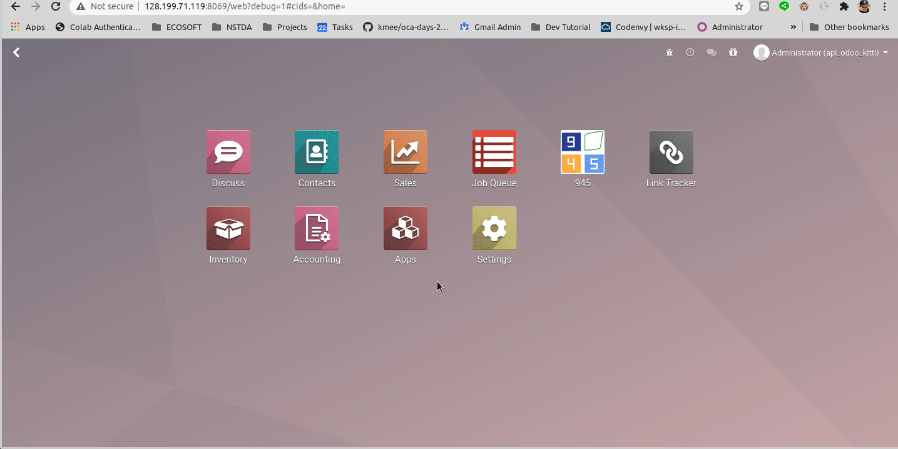

ภาษีไทย รายงานที่สามารถออกได้จากระบบมีดังนี้ Tax Report PND Report รายงานจะออกจาม Period ที่สนใจ แต่ใน Odoo มาตรฐานไม่มี Period OCA มีโมดูลที่แก้ปัญหานี้คือ Date Range.
การสร้าง Date Range สร้าง Date Range Type เช่น Period Generate Date Ranges เช่น สำหรับปี 2020 เป็นจำนวน 12 Period Date Ranges ถูกสร้างขึ้น สามารถใช้เลือกในการกำหนดช่วงการออกรายงาน 